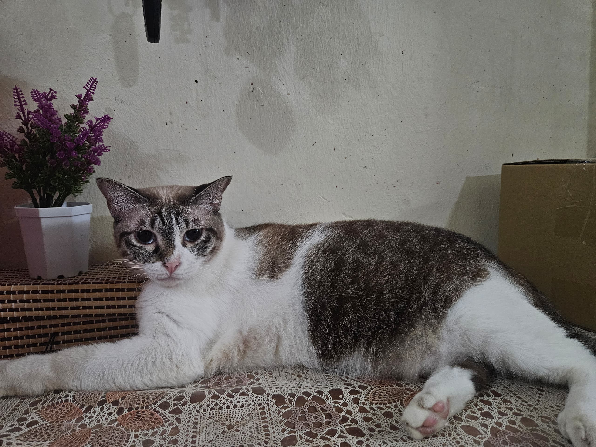

Debab is the oldest and the fattest of all my cats. This light orange furball spends most of the day lounging around the house, always looking for the best nap spot. True to his name, Debab is lazy and rarely engages in playful activities, preferring instead to observe everything from a comfortable distance. Despite his laziness, he has a charm that makes everyone in the house adore him.
Jacob, my dark orange cat, is the complete opposite of Debab. He is always full of energy and loves to fool around, whether it’s with humans or fellow feline companions. Playful and mischievous, Jacob is the life of the house, constantly running, jumping, and exploring. He never misses an opportunity to turn anything into a game, making him the most entertaining of the bunch.
Teratai is a small, black-striped cat with a shy personality. Unlike Jacob, she prefers to keep her distance and doesn't enjoy being touched. If someone tries to pet her, she will likely bite in protest. However, despite her standoffish nature, she has a curious side and often follows people around the house, keeping an eye on everything. She might not seek affection, but her presence is always felt.
Cindy is the fattest female cat in the house. Unlike Debab, she is not particularly lazy, but she does have a strong personality.
She can be quite vocal when people touch her, making her dissatisfaction clear with loud meows. However, unlike Teratai, she won’t bite—just complain. Cindy is a quirky cat who makes her presence known, ensuring everyone respects her personal space.